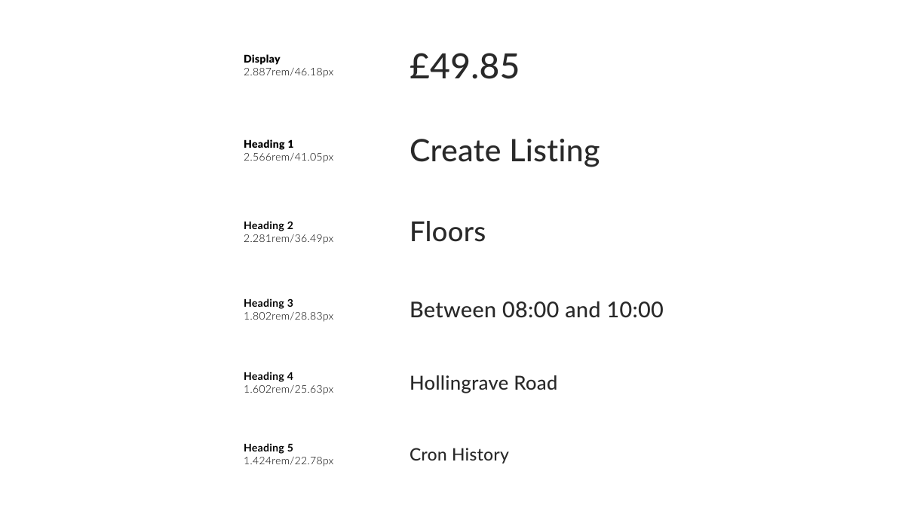
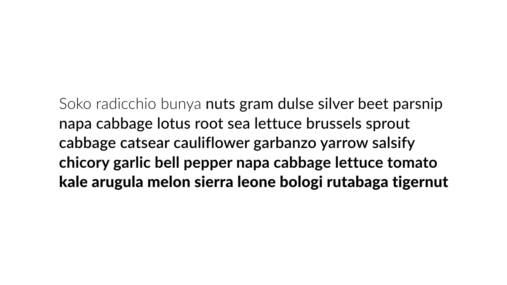

To ensure brand uniformity and consistency across all type and copy, a type scale has been installed for the AnyVan brand. To build a type scale, first select a base font size - as a rule, the default base font size for all AnyVan typographic scales is 16, but this can be adjusted as needed, depending on the execution or application
The default ratio for all AnyVan typographic scales is 1.125 — major second — this ratio cannot change as it governs all typography and acts as the base figure by which to calculate all font sizes. To calculate font sizes, simply multiply the base font size by the base ratio — 16 * 1.125 = 20, 20 * 1.125 = 25
As a reminder, using typographic scale to build a type system isn’t perfect — one would need to make decisions on things like rounding to account for decimal places — but it is a powerful tool in building a potent, consistent and systematic visual language

Primary typeface
Lato is a sans serif typeface family started in the summer of 2010 by Warsaw-based designer Łukasz Dziedzic (“Lato” means “Summer” in Polish). In December 2010 the Lato family was published under the Open Font License by his foundry tyPoland, with support from Google.
When working on Lato, Łukasz tried to carefully balance some potentially conflicting priorities. He wanted to create a typeface that would seem quite “transparent” when used in body text but would display some original traits when used in larger sizes. He used classical proportions (particularly visible in the uppercase) to give the letterforms familiar harmony and elegance. At the same time, he created a sleek sans serif look, which makes evident the fact that Lato was designed in 2010 — even though it does not follow any current trend.

Font weights
Lato Light
Light
Lato Regular
Regular
Lato Medium
Medium
Lato Bold
Bold
Allocations
Below are the recommended font weights that ensure legibility, consistency and flexibility across the AnyVan brand
Headlines
Lato Medium
At AnyVan Business, our aim is to be the number one car transport company in the UK
Use 90% auto leading for print and OOH. Use a ratio of 1.1 for digital applications.
Use optical kerning with manual adjustments as needed for all print and OOH. Use 0.3 pixel letterspacing for digital
Copy
Lato Regular
At AnyVan Business, our aim is to be the number one car transport company in the UK. Our speciality is single car transportation direct to consumers with a seamless, safe and tested handover process with a focus on service levels.
Use 125% auto leading for print and OOH. Use a ratio of 1.6 for digital applications.
Use optical kerning with manual adjustments as needed for all print and OOH. Use 0.3 pixel letterspacing for digital
Web URL
Lato Regular and Bold
anyvan.com/storage
business.anyvan.com
Legal text
Lato Light
AnyVan Limited is a company registered in England and Wales | Registered address 5th Floor, The Triangle, 5-17 Hammersmith Grove, London, W6 0LG | Company number 06837274.
AnyVan LTD is an Appointed Representative of Eggar Forrester Insurance who are Authorised and Regulated by the Financial Conduct Authority | FCA Number 300008
Guidance
Only ever use sentence case - unless other specified
Downloads
You can learn more, and download, this font family and all weights on Google Fonts